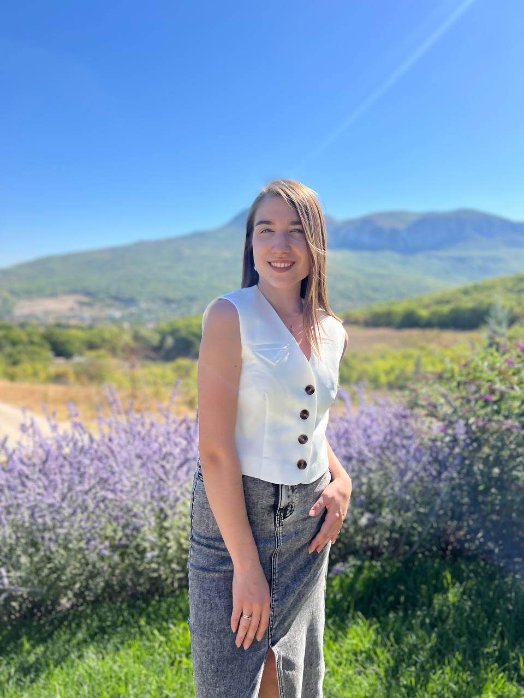
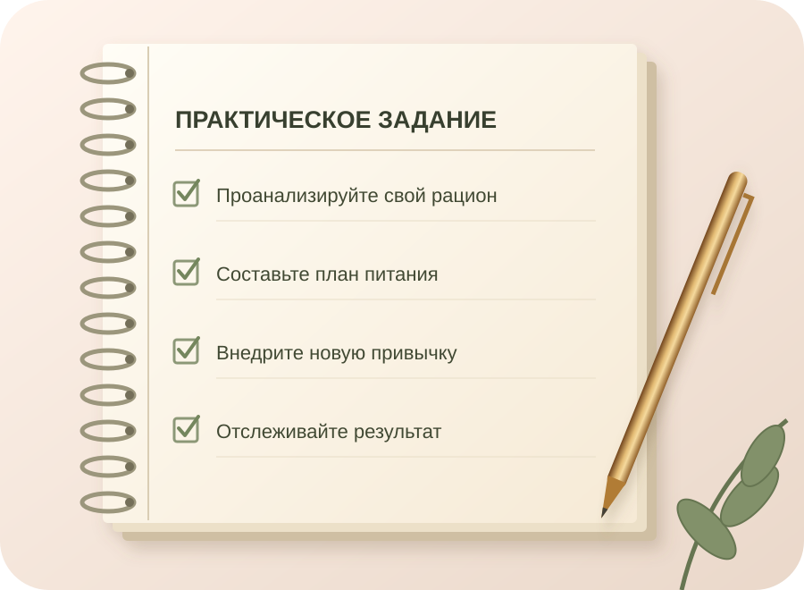
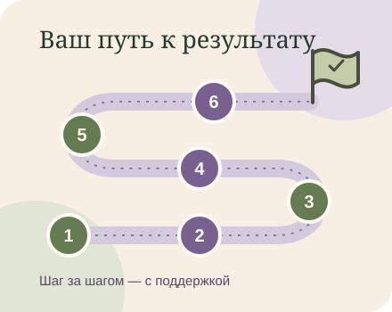
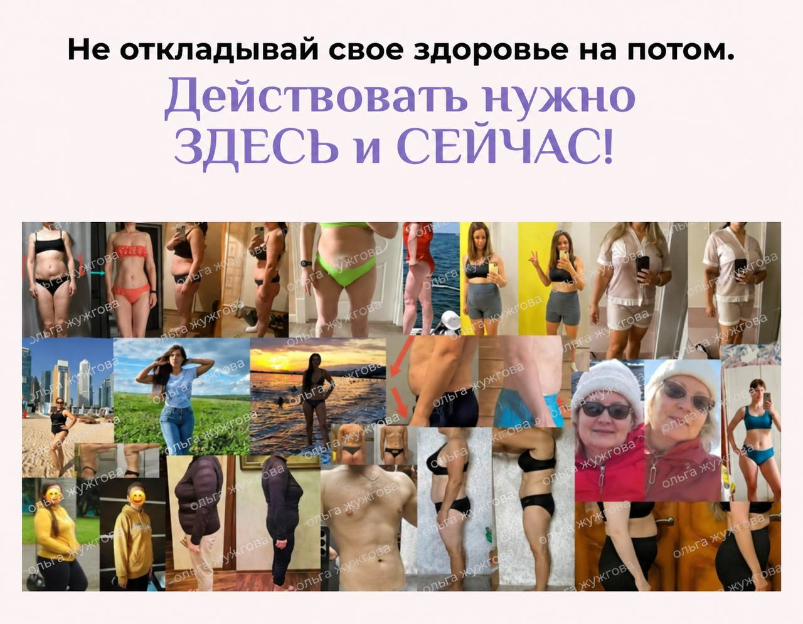
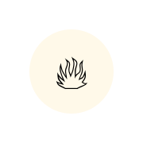
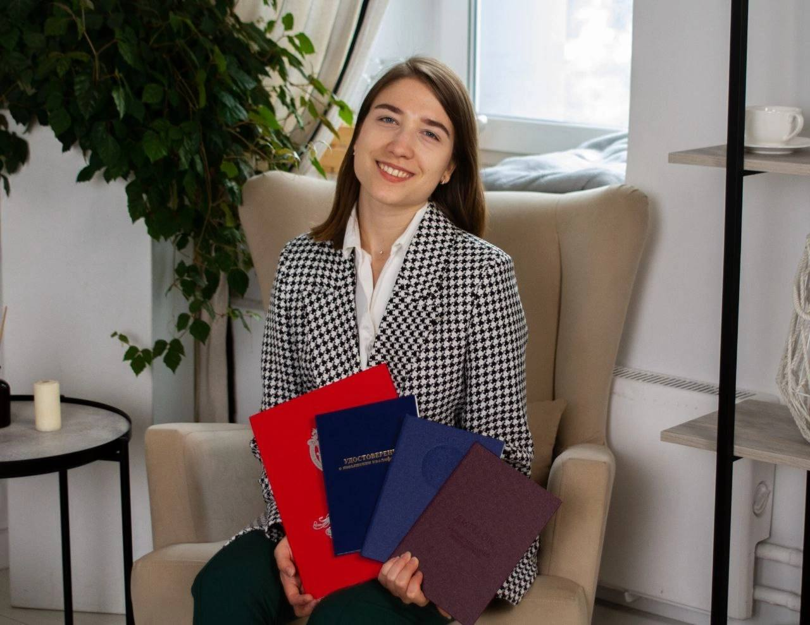

Уникальная программа — Метод 360°C
основана на доказательных инструментах в области диетологии, нутрициологии и психологии.
основана на доказательных инструментах в области диетологии, нутрициологии и психологии.
без запретов, подсчета калорий и жестких диет
выстроили здоровые отношения с едой, обрели фигуру мечты, улучшили здоровье и полюбили себя заново
Самые выгодные условия со всеми бонусами при записи до 15 декабря. Успевайте!

Диетолог, нутрициолог с высшим медицинским образованием. Эксперт в снижении веса
Снизить лишний вес, подтянуть тело и убрать отечность
Избавиться от срывов, перееданий и тяги к "вредным продуктам"
Спокойно есть любимые продукты, не переживая за свою фигуру
Научиться самостоятельно составлять себе вкусный сытный рацион
Убрать тяжесть, вздутие и дискомфорт после еды. Наладить работу пищеварения
Научиться питаться сбалансированно в любой ситуации: в кафе, на ДР, в праздники, в поездке, в отпуске. Поддерживать фигуру в форме.
Перед стартом программы вы заполняете анкету - чтобы учесть ваши цели, пожелания и состояние здоровья.
Вместе выстраиваем ваш персональный план снижения веса - питание, пищевые привычки, режим, сон, стресс, эмоциональные триггеры.
Начинаем вести дневник питания: вы делитесь фото рациона за день в закрытом чате группы, ежедневно получаете от меня обратную связь по коррекции рациона и поддержку.
На первой неделе вы получаете индивидуальный рацион питания, который учитывает ваш рост, вес, возраст, потребности, состояние здоровья, привычки и легко встраивается в ваш образ жизни.
Рацион питания - это ключевой фактор успеха, который работает 100% у каждого.
Постепенно вы внедряете рекомендации от меня и видите результат уже после первой недели!
Обучающие материалы, где вас ждут подкасты, чек-листы, шпаргалки, сборники и полезные материалы: о питании, пищевом поведении, здоровье, спорте, психологии, пищевом поведении и мотивации.
На протяжении всей программы вам будут доступны сборники вкусных, простых рецептов: завтраки, салаты, напитки, полезная выпечка, десерты, блинчики. Вы сможете готовить это для себя и своей семьи без угрызения совести.
Вы не просто худеете, вы худеете вкусно!
Еженедельные взвешивания и замеры для отслеживания результата и динамики снижения веса.
Промежуточные итоги каждые 4 недели и по окончанию работы. Проводим рефлексию, вы получаете рекомендации по поддержанию веса.
От подготовительных дней до устойчивых привычек. Выберите карточку, чтобы изучить содержание.
На питание влияют привычки, сон, стресс, эмоции и то, как вы относитесь к себе. Поэтому мы работаем с вашей жизнью комплексно.
Шесть направлений складываются в единую систему. А в центре этой системы - вы и ваша стройность.
Посмотреть программу ↗Представленные результаты участниц индивидуальны. Сроки снижения веса и достижения результата до цели могут превышать более двух месяцев работы программы сопровождения. Нажмите на фото для увеличения. Все фото опубликованы с согласия участниц.
Смотреть отзывы
Которые легко встраиваются в ваш образ жизни, при этом дающие результат с первой недели.

Всегда в вашем доступе, можно изучать в любом месте 10-15 минут в день. Все применимо на практике.
Выстраиваем ваш индивидуальный план к цели
Завтраки, напитки, салаты, полезная выпечка и десерты.
Возможность задавать вопросы и получать развернутые ответы.
В процессе обучения.
Лично от меня или поддержка группы
Начинаем с вашей ситуации и
подбираем подходящий формат работы.

Программа сопровождения в группе
Рассрочка на 3-6 месяцев:

2705 ₽/месВся программа + индивидуальное ведение по питанию
Рассрочка на 3-10 месяцев:
4500 ₽/месВся программа + индивидуальное ведение по питанию + психология
Интенсив «Психосоматика лишнего веса», где вы находите корень своей проблемы и решаете ее раз и навсегда!
(Ценность 10000 руб)
Рассрочка на 3-12 месяцев:
5725 ₽/месВозможна внутренняя рассрочка и рассрочка от банка: условия и ежемесячный платёж уточняются перед записью.
Понятная пошаговая система, где вы постепенно выстраиваете питание под свой комфортный и образ жизни, идя к цели
Индивидуальный разбор вашего рациона и рекомендации именно под вашу цель, вкусы и предпочтения
Навыки, которые останутся с вами навсегда, — как кормить себя вкусно, сытно и сбалансированно. При этом не запрещать, а разрешать есть всё!
Поддержка на каждом шагу, чтобы вы не оставались один на один с вопросами
Спокойное отношение к еде без тревоги, крайностей и вечного контроля — осознанный подход к питанию
Комфортный процесс похудения, который можно адаптировать под работу, семью, путешествия, походы в кафе с друзьями и любой график
Результат через заботу о себе, а не через жёсткие ограничения и силу воли, основанный на доказательных методах в области диетологии, нутрициологии и психологии

Я тот самый человек, который с детства обожал учиться.
Медицина, нутрициология, диетология, психология, коучинг и психосоматика. Сегодня у меня 7 дипломов и более 1,5 млн рублей, вложенных в профессиональное образование.
В работе соединяю знания о питании, пищевом поведении и психологии.
Потому что человек - это большая единая система. Помогаю выстроить рацион, который подходит именно вам, постепенно поменять привычки и укрепить физическое и психологического здоровье через питание, мышление и отношение к себе. Жить в гармонии с собой и со своим телом.
О поддержке, новых привычках и переменах в отношении к себе. Отзывы сохранены в оригинале.
Напишите мне — обсудим ваш запрос и подходящий формат.